12
3
6
9
 RAM-7
RAM-7
 kar98
kar98
 vlk
vlk
 Бегом Марш - удвоение длительности тактического бега. Скорость перемещения в положении присев повышена на 30%. |
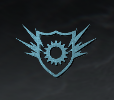 Сапер - уменьшен урона от огня и взрывов (кроме серий убийств). |
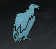 Мародёр - возможность брать боеприпасы убитых противников и союзников. |
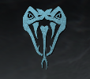 Хладнокровный - невидимость для системы целеуказания ИИ и тепловизоров. Защита от перка "Бдительность". |
 Массовое убийство - Только сетевая игра: убийства, совершенные с помощью серии убийств, засчитываются для получения следующих серий. Действие распространяется только на серии, полученные в текущей жизни. |
 Быстрое лечение - убийство противников немедленно начинает восстановление здоровья. Захват и удержание целей увеличивают скорость восстановления. |
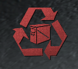 Пополнение - Только сетевая игра: перезарядка снаряжения занимает 25 секунд. |
 Упрямец - Только сетевая игра: число убийств, необходимых для вызова серий, уменьшается на 1. |
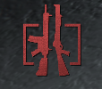 Фора - возможность носить две единицы основного оружия. |
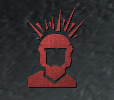 Бдительность - экран мигает, когда вас замечают противники, находящиеся вне вашего поля зрения. |
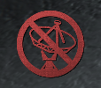 Призрак - невидимость для БПЛА, радиолокационных БПЛА и датчиков сердцебиения. |
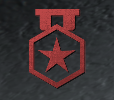 Дозорный - Только сетевая игра: ваши серии убийства превращаются в серии очков. |
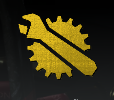 Настройка - Только сетевая игра: ускорение зарядки полевых модификаций на 40%. |
 Прокачка - ускоренная смена оружия и перезарядка гранатомета. |
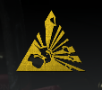 Шрапнель - дополнительная единица боевого снаряжения при возрождении. Урон взрывчаткой замедляет восстановление здоровья противника. |
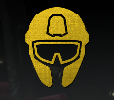 Ветеран - ослабление действующих на вас негативных эффектов ослепления, оглушения, ЭМИ и газа. Невидимость для сканирующих гранат. |
 Наблюдатель - возможность видеть снаряжение, полевые модификации и серии убийств противника сквозь стены, а также отмечать его для своей команды взглядом через прицел. Взлом неприятельских систем активной защиты, контактных мин, мин "Клеймор" и зарядов С4. |
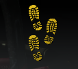 Следопыт - возможность видеть следы, оставляемые противниками. Возможность видеть метки на местах гибели противника, а также скрывать метки смерти своих жертв. |